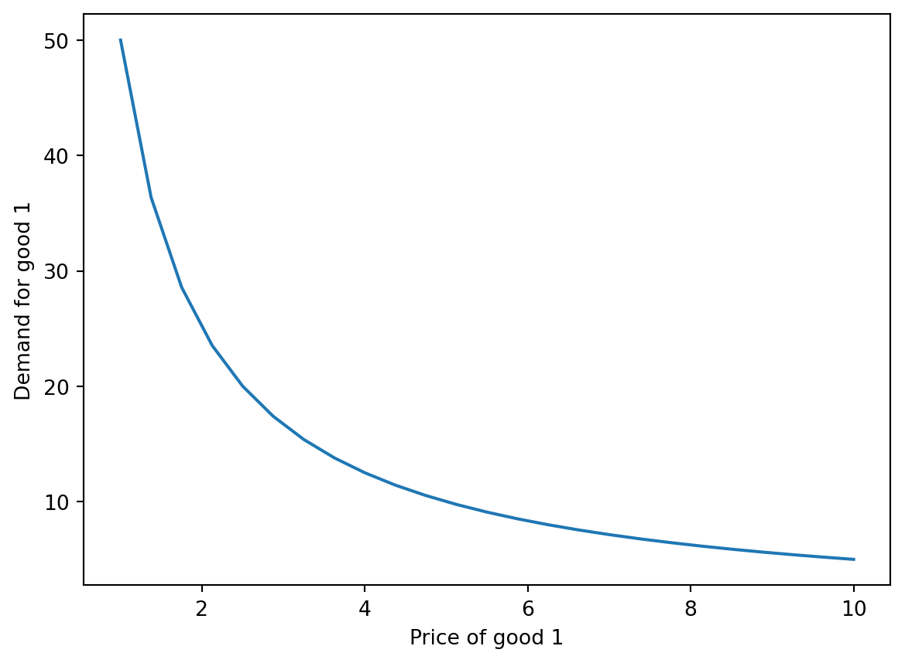
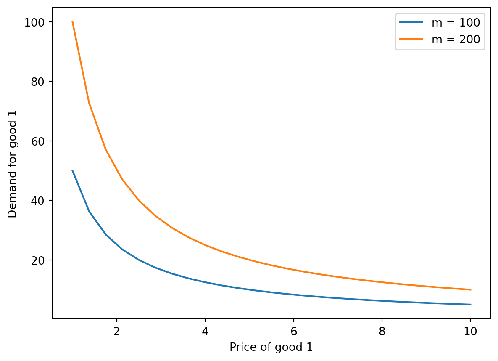
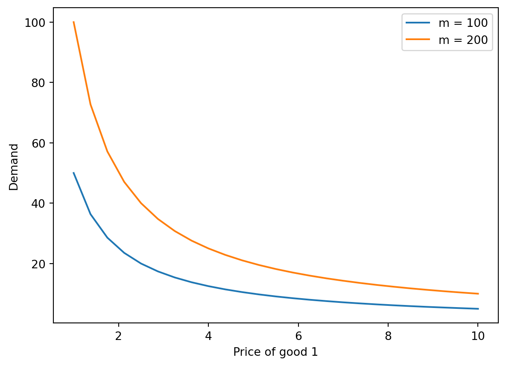

If you are taking this course for graduate credit, you will need to complete a project. The grade for the project will count in place of the active engagement grade. The project is due on the last day of class. You only need to complete this assignment if you are graduate student taking this course for credit, undergraduate students are not required to complete this assignment, but can do so for fun and I would be happy to check your work, but it will not count towards your grade.
This project will teach you how to use Python programming to solve a simple mathematical problem with some economic intution.
Before you get started, you need to know some basics of Python programming below and also complete the tutorial on optimization in Python. In particular, the tutorial shows code for example, you will be modifying that code to solve a related but expanded problem. Once you are done with the two tutorials, you can start the project. You will find the instructions for the exercise you need to complete at the end of this document.
Tutorial 1: Basic Python Programming
Python is…
Usually how it works, you run something vs running on cloud
.py files and notebook files
I will not teach you workflow becuase this is not a programming class, but if you ever want to do anything serious, you need to learn that.
What we will do and see how programming can be used to solve economic models.
So we will use the simplest setup possible, which you should also be familar from your other classes, which is to use Jupyter notebook on Google Colab.
You can always play around with the code below and run it, modify it, etc. But remember once you refresh it it goes back to the original code. You can also copy code to your Jupyter notebooks in Google Colab and modify it there.
Packages and Syntax
Lists/vectors
Loops
Functions
Plots
Tutorial 2: Optimization in Python
Optimization by Hand
Example 1 for constrained maximization (add link), we derived demand functions for good 1 and 2 given a utility function.
Note that \(m = p_1 x_1 + p_2 x_2\) is the budget constraint. \(\alpha\) determines the share of expenditure on good 1. What is the value x1 and x2 for \(\alpha = 0.5\), \(m = 100\), \(p_1 = 5\), and \(p_2 = 5\), should be x1 = 10 and x2 = 10.
Write a function in python that gives x_1 and x_2 as function of \(\alpha\), \(m\), \(p_1\), and \(p_2\). Call this function solve_by_hand as we solved the expressions for demand by hand are then coding that in Python. Once we write the function, we will also test it with the following parameters: \(\alpha = 0.5\), \(m = 100\), \(p_1 = 5\), and \(p_2 = 5\).
# Define the functiondef solve_by_hand(alpha, m, p1, p2): x1 = alpha * m / p1 x2 = (1- alpha) * m / p2return x1, x2# Implement the functionalpha =0.5m =100p1 =5p2 =5x1, x2 = solve_by_hand(alpha, m, p1, p2)# Print the results (round to 2 decimal places)x1, x2 =round(x1, 2), round(x2, 2)print(f"Demand for good 1: {x1}")print(f"Demand for good 2: {x2}")
Demand for good 1: 10.0
Demand for good 2: 10.0
Now let’s do some comparative statics.
We will plot demand for good 1 as a function of price of good 1 fixing other parameters at above values.
Add another curve to the existing plot 1, where m = 200.
# Import necessary librariesimport numpy as npimport matplotlib.pyplot as plt# Create a vector of 25 price values for good 1 between 1 and 10K =25# Number of pointsp1_vals = np.linspace(1, 10, K)# Calculate demand for goods for each price value in a loopx1_vals = np.zeros(K)x2_vals = np.zeros(K)for i inrange(K): x1_vals[i], x2_vals[i] = solve_by_hand(alpha, m, p1_vals[i], p2)# Plot demand for good 1 as a function of price of good 1plt.plot(p1_vals, x1_vals)plt.xlabel('Price of good 1')plt.ylabel('Demand for good 1')plt.show()

So we get out regular downward sloping demand curve. Now let’s add the second curve where m = 200.
# Calculate demand for goods for each price value in a loop with m = 200x1_vals2 = np.zeros(K)x2_vals2 = np.zeros(K)for i inrange(K): x1_vals2[i], x2_vals2[i] = solve_by_hand(alpha, 2*m, p1_vals[i], p2)# Create a new plot with the second curveplt.plot(p1_vals, x1_vals, label='m = 100')plt.plot(p1_vals, x1_vals2, label='m = 200')plt.xlabel('Price of good 1')plt.ylabel('Demand for good 1')plt.legend()plt.show()

Optimization using Python
We saw it can be useful to do comparative statics, etc using a computer than by hand. But for now we solved the expressions by hand and then coded them in Python. Sometimes the expressions are too complicated to solve by hand in economic models, and it can useful to just code up the models to get useful insights, without explicitly solving the model. This is bery common for complex macroeconomic models, which are sometimes only possible to solve using numerical methods. While our problem can be solved analytically, we will still learn how to use Python to solve to get a taste of how to solve more complex models.
We will first fix \(alpha = 0.5\), \(m = 100\), \(p_1 = 5\), and \(p_2 = 5\) and use minimize from scipy to solve for the optimal values of \(x_1\) and \(x_2\). Then as before we will use our logic and write a function to solve for demand given the parameters. Call this function solve_demand.
import numpy as npfrom scipy.optimize import minimize# Parametersalpha =0.5m =100p1 =5p2 =5# Utility functiondef utility(x): x1, x2 = xreturn-x1 ** alpha * x2 ** (1- alpha)# Budget constraintdef budget_constraint(x): x1, x2 = xreturn m - p1 * x1 - p2 * x2# Specify the constraints and initial guessconstraints = ({"type": "eq", "fun": budget_constraint})initial_guess = [1, 2] # Use minimize from scipy to solve for the optimal values of x1 and x2result = minimize(utility, initial_guess, constraints=constraints)x1, x2 = result.x# Print the results (round to 2 decimal places)print(f"Demand for good 1: {round(x1, 2)}")print(f"Demand for good 2: {round(x2, 2)}")
Demand for good 1: 10.0
Demand for good 2: 10.0
So in this case, we just told the computer out objective function and constraints and it solved for the optimal values of \(x_1\) and \(x_2\) for a given set of parameters. The computer can also plot the function for us and tell us how x1 and x2 change with parameters, but off course it can only do so numerically, not give us the exact expressions. But in a lot of cases, that is all we need.
Note that we actually defined neg of utility as function to minimize, since we want to maximize utility.
Now that we know how to solve for demand using Python, let’s actually define a function using the logic above to solve for demand given the parameters. Essentially just enveloping the code above in a function.
# Define the functiondef solve_demand(alpha, m, p1, p2):def utility(x): x1, x2 = xreturn-(x1**alpha) * x2 ** (1- alpha)def budget_constraint(x): x1, x2 = xreturn m - p1 * x1 - p2 * x2 constraints = ({"type": "eq", "fun": budget_constraint}) initial_guess = [2, 5] result = minimize(utility, initial_guess, constraints=constraints) x1, x2 = result.xreturnround(x1, 2), round(x2, 2)# Implement the functionm =100p1 =5p2 =5alpha =0.5x1, x2 = solve_demand(alpha, m, p1, p2)print(f"Demand for good 1: {x1}")print(f"Demand for good 2: {x2}")
Demand for good 1: 10.0
Demand for good 2: 10.0
Now again you can plot demand for each good as a function of it’s price aka demand curve. And also see how this changes with income, shifts right.
# Apply function in loop for different prices of good 1x1vals1 = np.zeros(K)x1vals2 = np.zeros(K)for i inrange(K): x1vals1[i], _ = solve_demand(alpha, m, p1_vals[i], p2) x1vals2[i], _ = solve_demand(alpha, 2*m, p1_vals[i], p2)# Plot demand curvesplt.plot(p1_vals, x1vals1, label='m = 100')plt.plot(p1_vals, x1vals2, label='m = 200')plt.xlabel('Price of good 1')plt.ylabel('Demand')plt.legend()plt.show()

Exercise
In this exercise, we will consider utility maximization with a CES utility function. The function used in the above example is called a Cobb-Douglas utility function, which is a special case of the CES utility function.
In particular, the utility function is given by: \[ U(x_1, x_2) = \left( \alpha x_1^{\rho} + (1 - \alpha) x_2^{\rho} \right)^{1/\rho} \]
Where \(x_1\) and \(x_2\) are the quantities of good 1 and good 2 consumed, respectively. \(\alpha\) is the share of expenditure on good 1, \(\rho\) is the elasticity of substitution between the two goods.
stuff about CES function, elasticity of substitution, etc.
Each part is worth 2.5 points.
Modify solve_demand to create a function called solve_demand_ces that solves for the demand of good 1 and good 2 given the CES utility function.
Plot the own demand and cross demand curves for good 1 and good 2 as a function of the price of good 1 and good 2. Put these plots in a 2x2 grid with appropriate labels and titles.
Verify that the demand for good 1 and good 2 same as when using solve_demand function when rho very small ie. close to 0.001.
When rho really large (try a big number like 100), what happens to the demand for good 1 and good 2? Try a number close to 1 (like 0.95)
Write a short paragraph explaining that if price of Heinz ketchup goes up, what happens to the demand for French’s mustard, if the two are complements.
Submit Jupyter notebook with the code and the answers to the questions.